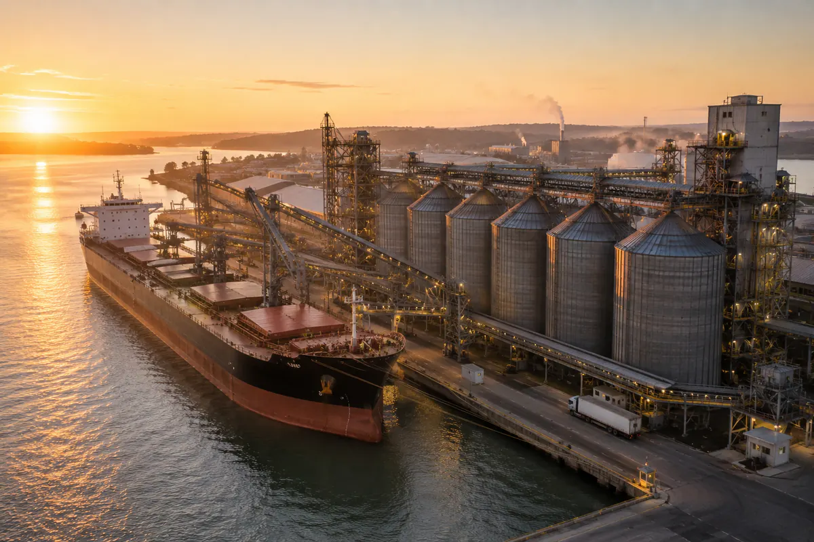

West Africa
Logistics Corridor
A cross-border road freight corridor under development, conceived to connect ports, logistics centres and inland markets across West Africa under a single coordinated structure.
The project
The goods arrive
at the port.
The problem
starts there.
Across West Africa, freight that has cleared a port still has to reach markets that may be in another country, over routes served by different carriers, under different rules and different paperwork at every crossing.
The corridor is our answer to that: a route designed once, with the operators, the transit points, the documentation and the responsibilities defined in advance, so that a movement between two countries behaves like a single operation instead of several.
AZAN is developing it as the structuring and coordinating party. Transport, handling and customs work will be carried out by the operating structures of the group and by licensed local operators.
The chain
What the corridor
connects
Objectives
What the corridor
is meant to change
These are the objectives the project is designed around. Results will be published only once they can be measured and evidenced.
Predictable transit
A route whose stages and crossings are prepared in advance, so that transit time can be planned rather than hoped for.
One responsible party
A shipper contracts one counterparty for the whole movement instead of a different carrier in each country.
Documentation in order
Customs and transport documentation prepared with the operation, not improvised at the border.
Access for inland markets
Reliable port access for destinations that have no coastline of their own.
Local participation
Local carriers, drivers, agents and service providers taking part in the corridor as operators within it.
A repeatable structure
A corridor model that can be extended to further routes once the first is running.
Where the project stands
Development
stages
Definition
The corridor model: what it connects, how a movement is structured and which parties are needed to run it.
Partners and operators
Identifying and agreeing terms with carriers, agents, brokers and local partners along the route.
Framework and permits
The contractual framework between the parties, and the authorisations each activity requires in each country.
First operations
Running the route in practice, measuring it, and correcting the model against what actually happens.
Consolidation
Turning the route into a regular service, and extending the model to further connections.
Who it is for
If you are part
of this chain
The corridor is being built with its users and its operators at the same time. Both conversations are open.
Shippers and importers
Companies moving goods into or across the region that need a single responsible counterparty.
Carriers and agents
Licensed transport companies, customs brokers and port agents interested in operating within the corridor.
Institutions and financiers
Public bodies, development institutions and investors whose mandate touches trade and transport infrastructure.

Next step
Take part in
the corridor
Tell us whether you need to move freight along this route, or whether you operate on part of it.